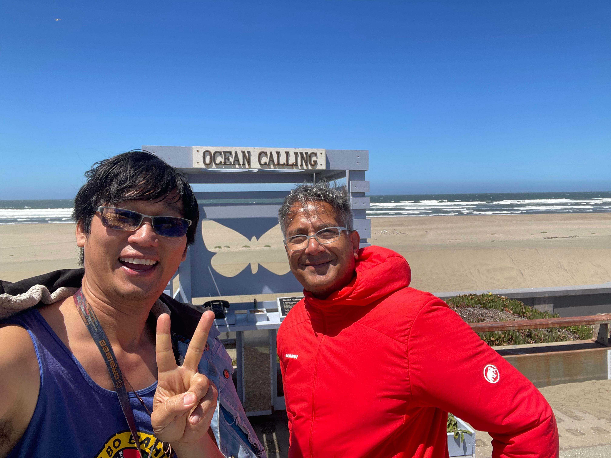

Spent the morning with my ex-colleague Bilal doing nothing — just strolling from one end of Ocean Beach to the other and back again. We weren’t trying to solve anything. We were just walking.
Edmodo, ten years later
Inevitably we ended up reminiscing about Edmodo — the K-12 platform we’d worked on together a decade ago. One of the unresolved threads from those years was micro-credentialing: how do you record what a kid actually did in a classroom, not the average of what they tested into? We’d explored putting it on a blockchain. The use case was right; the substrate wasn’t. Too much overhead, too much speculation noise, not enough discipline around what the credential was actually for. We shelved it.
A decade later Bilal’s passion for experiential learning hadn’t moved. If anything it had gotten more concrete. He now runs a network of butterfly conservatories across Pakistan, set up over the last several years and now operated by the local schools. Kids attend. Kids learn. Kids leave with something real — the kind of something that doesn’t map cleanly onto a test score. He kept coming back to the same question we’d had at Edmodo: how do you credential this? Not they passed a multiple-choice test about lepidoptera, but they spent thirty hours observed by Mrs. X learning to identify pupae, and Mrs. X was trained by Dr. Y who founded the program. A chain. Watched in real time. Logged.
The Edmodo thread, picked up exactly where we left it.
The pattern that wasn’t new
What made the walk feel like more than a personal reunion was realizing how many other conversations the same question had already been quietly running through.
Emelin — one of TrueSight’s longest-running contributors, with 350+ logged contributions across Agroverse and Sun Mint — had asked earlier this year about how to use her DAO work as a reference when applying for jobs. A reasonable ask. The DAO ledger already records every contribution she’s made; what she needed was a verifiable, portable view someone outside the DAO could read.
Suheil had brought up the same gap for kids in a program he supports in Palestine. Different geography, different stakes, same shape: kids in classrooms doing real work, no receipt the kids can carry forward.
Stanley Li had mentioned it in the context of students at SFSU. A degree-granting university already produces credentials, of course — but the lived-experience layer that happens between the official transcript lines (research labs, side projects, internships supervised by particular faculty) is exactly the thing the transcript doesn’t encode well.
Then Elizabeth Wong (Liz) at Aora. Aora teaches kids about agroforestry with Agroverse’s cacao supply chain as the live curriculum — same shape as Bilal’s butterflies, kids learning from particular adults doing particular real things. Liz mentioned that government funding for after-school programs broadly has been cut, the kind of headwind that hits programs like hers even when their own grant pipeline is intact. That sharpened the question: when the public-funding tide goes out, the program’s legitimacy has to come from a different place. What the kids actually did, attested by whom, becomes the receipt that lets the program prove its worth without leaning on a funding-line that may not be there next cycle.
Labinot, on the same Aora team as Liz, runs a software engineering program for students. Different domain, identical structure: a student opens a PR, an instructor reviews and signs off, the student walks away with a record of what they shipped and who watched them ship it. Not got a B in CS 101. Wrote this specific change to this specific repository, reviewed by this specific instructor, on this date.
And Ken, in a different context entirely — workforce development for the City of San Francisco — was running into the same wall. SF workforce programs train adults who then go on to industry jobs; how do you credential what those adults actually demonstrated, attested by the program staff who watched them do it? Same question Liz is asking about kids, one developmental stage later. Public-program budgets are tightening on Ken’s side too, which makes the question of legitimacy-without-grant-money equally pressing.
Seven operators across at least four countries, no coordination between them — all independently bumping into the same missing piece. Bilal hadn’t even said the word blockchain on the walk; he’d just described the operational pain. By the time I’d turned around at the south end of the beach the through-line was obvious. This wasn’t a new idea looking for a use case. It was a use case that had been waiting for the rest of the stack to grow up.
What the angels couldn’t name
Toward the end of the walk Bilal pointed me to a passage in the Koran. God creates Adam and then asks all the angels to bow before him. The angels — reasonably, by their own lights — ask why. God says: Adam can name many things that you cannot. Adam demonstrates. The angels bow. Except one. He refuses, on the grounds that he is older and made of fire while Adam is made of clay. He gets banished.
Set aside the theology and what the passage describes is operationally precise. Angels reason in terms of rules. Given any set of premises and any set of binary logic gates, an angel will execute correctly. What angels cannot do is name — in the deep sense of taking lived, particular, embodied experience and giving it a handle that other humans can grab and carry forward through time. The naming is the thing the rule-followers couldn’t do.
It’s hard not to read that as a 2026 parable. The angels have arrived. They are extraordinarily capable: they can pass any exam, write any essay, render any image, draft any email. What they cannot do is name — not in the way that matters. Naming requires standing in a particular place at a particular time and feeling a particular thing, then pointing at it and saying this; let’s call this that. The angels cannot stand in places. They cannot feel time pass. They can only fluently describe what other people have already named.
Which is exactly the gap every operator in the previous section is running into. The classrooms and programs they’re running aren’t producing test scores. They’re producing named experience: a contributor who recorded 350+ DAO actions under specific governors’ review; a kid who learned to recognize a Lepidoptera pupa under Mrs. X’s eye; a kid who pruned a cacao branch under a particular farmer’s instruction; a student who shipped a real PR while a real engineer watched. The output of each program is a chain of named, observed acts. The credential is the chain.
This is what humans have always done when surface signal got cheap: fall back on lineage. The yogi who teaches you was taught by someone, all the way back to the root of a known line. The capoeira mestre who promotes you was promoted by a mestre, back to Bahia. Vipassana teachers, Zen dharma transmission, Sufi silsila — they all encode the same thing. I watched this person do this thing. My own credential to make that claim is in turn anchored to someone who watched me. Break the chain, the credential dissolves.
Lineage-based credentialing felt medieval in the LinkedIn era because surface markers were enough. They aren’t any more. The depth has to be located somewhere the angels can’t fabricate, and the somewhere is the chain.
What we shipped this week
The walk happened to coincide with the week we shipped the first instance of TrueSight’s credentialing layer, on top of the same governance substrate we’ve been building for the DAO since 2023.
The mechanics are at CREDENTIALING_PLATFORM.md, but the shape is simple. A practice surface lets a practitioner record a session, sign it with their own keypair, and post it to a public, append-only ledger. Over time a chain of signed sessions accumulates. A master in the lineage can co-sign a qualification — I watched this person practice; here is their level. The master’s signature is itself anchored to the lineage they belong to, traceable back to the root. The credential is the chain.
The first practice surface is capoeira, anchored to Mestre Bico Duro’s line in Bahia — a real lineage tradition we’re bolting the on-chain proof onto, not a synthetic credential. The first 377 DAO contributor profiles got migrated in the same pass, so DAO governance work and elective practice work both surface on the same CV page, with the same audit trail back to the underlying ledger. Every claim cites the row that produced it. Nothing on the page is unverifiable.
Where this is going
The list, in roughly the order we expect to encounter them. The full roadmap with PR-level granularity lives at CREDENTIALING_PLATFORM.md §11; the broader DAO backlog is in OPEN_FOLLOWUPS.md.
- Job-reference flows for existing DAO contributors — Emelin’s ask is already mostly answered: her profile page renders the auditable record. Next is the bilateral attestation: someone who has worked with her can co-sign “I observed this work,” anchored to their own DAO credential.
- Aora cohorts — Liz’s program, and the immediate next instance for kids-in-classrooms credentialing. Same machinery that signs a capoeira training session signs a kid’s field day at an Agroverse-partner farm. Manifest edit, no new code. Especially load-bearing in a climate of broad after-school-funding cuts: a portable, lineage-anchored record of what the program actually produced.
- Labinot’s SWE program — a student’s shipped PR, co-signed by the reviewing instructor, anchored to the instructor’s own credential chain. A transcript that names specific work and specific observers, not a letter grade.
- Ken’s SF workforce programs — adults completing training that prepares them for industry jobs. The credential needs to mean something to the next employer; a chain of program-staff attestations is what survives the next funding cycle.
- Stanley Li’s SFSU students — lab work, research supervision, side projects, internships. The lived-experience layer that doesn’t fit cleanly on a transcript.
- Suheil’s Palestine program — kids whose education infrastructure is fragile in ways the rest of us mostly aren’t living through. The case for a portable, instructor-anchored credential is at its most acute here.
- Bilal’s butterfly conservatories — the Edmodo conversation, ten years later, on a substrate that finally fits.
- Bilal’s four social-impact projects — different domains, same architecture.
- Lineage traditions further out: yoga instructors in known lineages (Iyengar, Pattabhi Jois, Krishnamacharya); Vipassana instructors anchored to the Goenka or U Ba Khin lines; Zen dharma transmission in modern Western sanghas. The transmission already happens, in private. We’re just making the chain readable.
There’s also a legal-structure question. The DAO governance can produce credentials that mean something in the social fabric, but credentials that need to interface with regulated systems — education, healthcare, finance — need a legal wrapper. A DUNA (Decentralized Unincorporated Nonprofit Association, Wyoming) is one candidate, but the more useful frame is ICANN — the thin nonprofit that coordinates DNS roots and not much else. The credentialing equivalent: a thin coordinator that registers lineage roots so they don’t collide and doesn’t try to police what credentials mean. Heavy regulatory bodies overreach. ICANN doesn’t decide which websites are good; it just makes sure two people can’t both claim example.com. That’s the right thickness for the layer.
The walk back
We turned around at the south end of the beach and walked back. Neither of us tried to summarize what we’d talked about — that’s the do-nothing discipline.
But the through-line was clear enough that I sat down when I got home and wrote it: Emelin, Suheil, Stanley Li, Liz, Ken, Labinot, Bilal — independent operators across at least four countries — have all been quietly asking the same question. The question is one humans have answered before in every domain where surface signal got cheap: which chain of people watched the work? The angels don’t have a place in that chain. They can summarize it; they can fluently describe it; they can’t enter it. They weren’t there.
The angels are here. What’s left to us is what they couldn’t name.
Join the discussion
The credentialing platform is live at truesight.me/credentials. The first practice surface is capoeira.agroverse.shop/practice.html. The design doc is CREDENTIALING_PLATFORM.md.
If you teach in a lineage tradition — any of the ones above, or one we haven’t named yet — the next instance is the conversation we want to have. Find us in Telegram, in Beer Hall, or on the DAO web app.